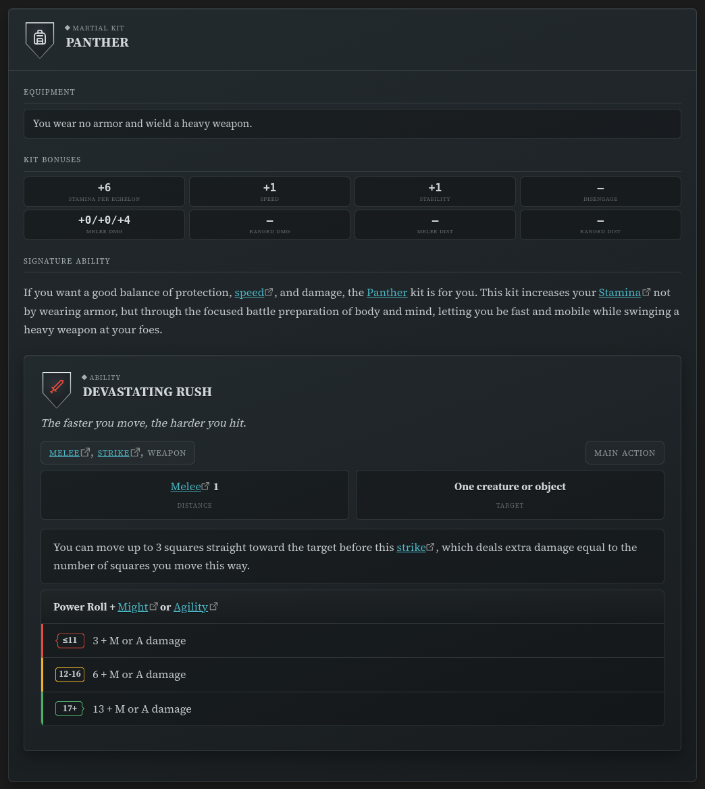

Compendium Sync¶
Compendium Sync downloads the Markdown of the
Draw Steel Compendium — published from the
data-unified repo — into a folder in
your vault, and keeps it up to date.
Non-destructive by design: only files the plugin itself installed are ever created, updated, or removed. Your own notes in the destination folder — and any file that happens to collide with a compendium path — are never touched; a collision is skipped and reported instead of overwritten. Removals (a file deleted upstream) go through Obsidian's trash, so they're always recoverable, never a hard delete.
The rules are still actively in development and are subject to change. If you link to files in the compendium, a future sync may rename or remove the file at that path. To lock in a specific version, set the Release field to a specific release tag.
First time? Getting started walks through the sync in context.
Quick Start¶
- Open Settings → Draw Steel Elements → Compendium.
- (Optional) Edit the configuration.
- Click the Sync button.

The compendium downloads into the Destination folder (DS Compendium by default).
Configuration¶
On the Settings → Draw Steel Elements → Compendium page:
- Destination folder
- Vault folder the compendium is synced into.
- Default value:
DS Compendium - Release
- Set to a specific release tag to lock in a specific version of the compendium.
- Leave empty to sync the latest release.
- Locale
- The compendium's language. Only English (
en) is published today.
Below these fields, the settings tab shows the currently synced release tag, file count, and sync date (or "No compendium synced yet.").
Syncing¶
- Sync downloads the selected release and updates only the files the plugin manages — new files are created, changed files are updated, and files removed upstream (that you haven't edited) are trashed. Files you added yourself, or upstream files you've edited, are left alone; anything skipped is listed in a Notice and the developer console.
- Check for updates makes a single metadata request to see whether a newer release is available, without downloading or changing anything.
First sync into an existing folder¶
If the destination folder already contains files but has never been synced by this plugin, the first sync stops and asks before touching anything. Which question it asks depends on what's in there:
- A pre-7.0.0 compendium (at least twenty files sitting at exact pre-7.0.0 compendium paths) — you're offered the layout migration: the old files are moved to their 7.0.0 paths so Obsidian rewrites the links in your notes for you. Declining leaves the compendium alone and does not sync — syncing creates the new files and makes the move impossible, so that is a separate, explicitly labelled button. You are asked again the next time you sync. See Migrating from 5.x to 7.0.0 → Your links to compendium notes keep working for what the dialog shows and what it will and won't do. The command Migrate compendium from the pre-7.0.0 layout runs the same thing at any time.
- Anything else (your own homebrew at that path, a partial copy) — you're asked to either move that folder to the trash first or keep everything in place.
Nothing is touched automatically either way; files you keep are still never overwritten if they don't collide with a compendium path, and any that do are skipped and reported. A fresh install never sees either prompt — there is no folder yet, and nothing to ask about.
Referencing a compendium entry in your notes¶
Once the compendium is synced, a ds-scc block renders any entry in it. The body is the
entry's SCC code — nothing else:
```ds-scc
mcdm.heroes.v1/kit/panther
```
That's the whole format. The scc.v1: prefixed form works too
(scc.v1:mcdm.heroes.v1/kit/panther); anything that isn't a code renders a short message
telling you so.

The easiest way to write one is the command palette: Insert Draw Steel: compendium reference searches the compendium and drops the block in for you. (Hold Shift when you pick an entry to insert an inline link instead, or Ctrl/Cmd to copy just the code.)
The block re-resolves every time the note renders, so it always shows the currently synced version of the entry — nothing is copied into your note but the code. If the code isn't in your vault, the block offers a link to the entry on steelcompendium.io and a nudge to sync.
What it looks like is not a promise. ds-scc renders whatever the entry is — a kit, a
condition, a rule, a statblock — using whichever layout suits it, and those layouts change
as the plugin develops. The code you write is stable; the card it produces is not
specified.
Statblocks, features and featureblocks accept the same reference in their own blocks — see Use a creature from the compendium.
Copying an entry to homebrew from¶
Insert Draw Steel: compendium block (snapshot) does something different: it pastes the entry's full YAML into your note as an editable copy. That's the starting point for homebrew — take a goblin, raise its Stamina, give it a new ability, rename it, and it's yours.
A snapshot is deliberately a copy, not a link: it does not follow the compendium afterwards, because your edits are the whole point. If you want content that keeps updating with the compendium, use Insert Draw Steel: compendium reference instead. Snapshots are offered for statblocks, features and featureblocks.
Command Palette¶
Syncing can also be triggered from the command palette:
- Open the Command Palette
- Search and execute
Draw Steel Elements: Sync compendium
The pre-7.0.0 layout migration has its own entry:
Draw Steel Elements: Migrate compendium from the pre-7.0.0 layout.